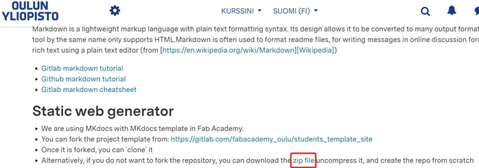

2. Project management¶
This week, Ivan taught us how to use GIT as a version control system to store, modify and recall files in local repository to online repository. After well configured, an individual can easily manage projects alone or invite others to work together in cyber space.
Reflection¶
I am 32 years old with literally no programming knowledge. This was the first time I programmed in real use(not just a standarized homework of “hello world”, but seriously for writing documentation of the whole Fablab session). To be honest, it took me some time to realise why this programming was about project management.
To finish the task, I installed Gitlab (failed to use due to the credit card verification), Github, GitCMD, Python, Mkdocs, all of which are freshly new to me. It means that I had to simultaneously learn and understand those computer sciences tools apart from the programming, the logic of VCS, as well as the non-stop courses from Fablab(all new).
Also, during COVID, I started everything online remotely, and had to get used to not only the engineering knowledge, but also the entire Fablab logistics and criteria including the communication styles in local Oulu branch.
Since my initial incentive is to experience maker education ethnographically, I have no face to lose, nor need I do things in a hurry as long as I do not give up. It is a process of problem solving.
Thus, I officially started the session with zero knowledge on Jan 11 2022, but returned to construct the documentation on Mar 9, 2022, after 10 weeks of constant practice and exploration via real project managements such as computer-aided design, computer-controlled cutting, intellectual property, electronics productions.
It is very useful as now I feel more practical and relatable to Ivan and Neil’s teaching materials (video, ppt, etc).
In this regard, I borrowed some of Ivan’s ppt pictures for elaboration.
I particularly thank Ivan for the comprehensive introduction of the knowledge as well as his patience, Diep for encouragement, and Antti R for extended Markdown knowledge such as the localhost: 8000.
Things to install when using Github:
- CMD (can use Git CMD): to run commands
- Notepad++: to write markdown or html syntax
- Github (register a personal account): to host webpages on VCS
- Python: to run mkdocs
- mkdocs: to transcribe markdown codes to html format
Create, modify and host a personal webpage: from VCS to Markdown¶
Stage 1: VCS, GIT, Gitlab & Github¶
When people create some files, there will be several verions which are not always ready or perfect, so different audience or cooperators may want to refer to specific versions at certain points, or construct different work paths, respectively. Therefore, it is needed to have an “online bank of files”, which is Version Control System (VCS).
GIT is a fast, user-friendly, flexible VCS to allow users to record changes to a file or recall previous versions from it as it saves historical logs. Multiple users can thus work cooperatively on the shared files. There are a number of popular VCS while this time we chose GIT as practice.

There are also several popular GIT code hosting sites with the same syntax. The biggest difference between Gitlab and Github is that the previous one needs a credit card verification. Most people prefer to use Gitlab as it supports mkdocs which can transfer Markdown into html language remotely.
Unfortunately, I was robbed so had to register a Github account where I must type mkdocs build every time manually on PC as it does not support mkdocs.
Stage 2: The creation of a page¶
Basic knowledge for absolute beginners:
First of all, a website is a text document. It is written in html syntax to allow browsers such as Chrome to read and display. A modern webpage usually consists of three parts:
- html is about the content (the uploaded text, pictures, videos) and structure of a webpage, which is shown as index.
- CSS is about the styles and design elements (font, colour, size) of a webpage.
- Javascript is about the interactive elements (toggles, pop-up windows, menues) with users.
Below is my first webpage using html sytanx.
On the other hand, just like academic terms, in computer sciences, there are also many CS words that need to know:
- configure: create, install, establish.
- directory: file.
- repository: warehouse, storage, a saving place.
- local: saved in your PC.
- remote: saved online (in VCS).
- push: upload files from local repository to the online repository.
- pull: the reversed flow of push.
- deploy: show, run, display.
Now, I need to push my webpage to Github. In common language, we can say to post it online.
Stage 3: Use static site generator to construct a personal site, then deploy on Github¶
It is crucial to know the learning objectives throughout the process. The goal was not to become a html expert, but to generate a documentation page for project management. So, I’d rather save time of typing codes line by line, but adopt some templates (note that you have to be careful of intellectual property issues when you want to “borrow” something).
Template saves plenty of time from scratching the surface of “hello world” as the html, CSS, and Javascript contents have been preset. You need to understand the basic logics and syntax of those parts to “fork your own” site by changing details.

Bootstrap, Wrap Boostrap, and Start Bootstrap are popular template websites for portfolio. For Fablab assignment, this time I adopted Ivan’s Fablab student template.
In fact, if something can be a template, it must contain certain brilliant ideas. You can right click the mouse on any webpage, or press F12, to open the “backstage” to see how certain codes and syntax effects the display of the text, which is good for active learners.
Now, I needed to push the personal webpage to Github.
Step 1 Open CMD, type git config user.name “xxx”, and git config user.email “xxx@xxx” to create a name and email address at GIT repository.

Step 2 git config –global user.email “xxx” to make your username and email the same for all repositories at your GIT.

Step 3 I used Ivan’s Fablab student webpage template from his Github page. Copy the url, and type git clone “the url”.

Step 4 Go to the downloaded student template file, cut and paste them to personal local repository.

Step 5 Delete 2 unnecesary files: .gitlab-ci.yml and requirements.txt

Step 6 Cut index.html and style.css to the newly created local repository. Then, go to CMD, do the following 4 steps to push the _docs files (or updates) to remote repository.

Try basic commands in GIT.
Notes on the codes:
- git status: Check if there are updated files in the local repository.
- git add .: Track the updated files and prepare them to be commited. You can also add xxx(specific files, remember to have the “full name.format” typing) to add specific files.
- git commit -m “xxx”: Store the added files to the local repository. “xxx” is a note or label.
- git push: Synchronise the files stored in local repository to remote counterpart. After this step, the locally saved files will be moved to the GIT repository.
In fact, you can type “git –help” to find basic commands.

Antti R taught me a very useful code to preview the webpage locally by typying mkdocs serve then open a window with the command localhost:8000. Every time I saved something on notepad, it will be refreshed immediately, which is great for checking and proofreading. To close it, press Ctrl + C.
Step 7 Create a remote repository to “receive” the uploaded files from local repository.

Step 8 Go to Github remote repository, click Setting - Pages, make sure the Branch to be master. You can see the information of “Your site is published at:.....” as the ultimately webpage. It takes some time to refresh so do not worry.
The webpage works because it is deployed on the folder of docs.
Finally, I can host the personal page through Github.

Step 9 Fork my personal information based on the student template.
To do so, open mkdocs.yml at the local repository with notepad++.

Then, I practised changing the title, adding a dark mode, the new colour of the webpage for spring, and customizing my social media information.

Step 10 THIS STEP IS CRUCIAL: _docs
After customizing my own information, under Github, I MUST change the doc into _doc. Then, create an empty file named doc.


In _docs folder I store and modify files in different folders, using markdown as source code. I put pictures and videos into images, and write documentations in assignments.

In docs folder I store the html source code built by mkdocs. This is page that is deployed and shown ultimately.

If I take examine the mkdocs.ymlfile, I can see that docs_dir represents _docs folder, while site_dir for docs folder.
In the _docs files, a user usually uses markdown syntax to upload & modify files to a webpage. To transcribe the contents into html format in docs file, you must use mkdocs commands.
To realize it, install two things:
-
Python.(Don’t be scared)
-
MkDocs (type pip install mkdocs in CMD to install it. Mkdocs is monitored by Python).


So, every time after modifying things in _doc, run the 4 steps (git status, git add ., git commit -m “xxx”, git push), you must also type “mkdocs build” to transcribe markdown into html saved in “docs”.

The management of local and remote repositories¶
Stage 1: SSH¶
SSH can be understood as keys to the GIT servers. Every time if someone (including the original creator) wants to upload or modify something from local repository, the server will check if the keys are matched.
There are public and private keys. THe public one can be shared to anyone for collaborative work, while the private one should be only stored in local PC.
You do no create the key on your own, but rather type ssh-keygen -t rsa -C “your.email@example.com” -b 4096 to create a long chain based on cryptology.

Go to home directory to find .ssh file. the _id_rsa is the private key. You can open with a notepad (but don’t share).

If you redo the ssh-keygen code, it means that the computer will randomly create a new pair of SSH. If you click y to overwrite the SSH, remember to copy & paste the new public key to the GIT.
!{}(../images/ssh1.png)
Otherwise, your new push will be denied as the public SSH is unmatched.
Stage 2: Markdown: makes coding easier¶
Interestingly, many people have not realized that they are directly using markdown language rather than html in notepad to modify personal webpage.
Let’s have a direct comparision between html and markdown grammars.

Apparently, markdown is much easier to learn and use. Using plain text, it does not require users to memorise very detailed syntax, but can pay more attention on the content writing. Markdown reads codes from top-down, vertical flow, so it omits the complicated layout setting. Of course, if you are an expert in html syntax, or want to debug very specific parts, or write more customised sites, it is rewarding to probe into html.
Below are my frequently used markdown syntax:
- **xxx**(2 dots on each side): make the text bold.
- *xxx*(1 dot on each side): *make the text in italics.
- ***: create a horizonal line.
- <span style=”color:green”> text </span>: colour specific text.
- : creat a link (video, picture, etc) to the webpage.
- [xxx](): label a file as xxx to allow readers to click it and open a file in another window.
In fact, the syntax in notepad is as below. There are two important tips for to escape the syntax characters:
- type \ before the sensitive characters
- use hex for some characters

Of course, there are many interesting markdown syntax from the cheatsheet worth exploring.(https://cheatography.com/snidd111/cheat-sheets/gitlab-markdown/)